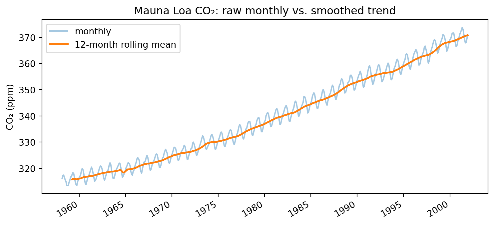
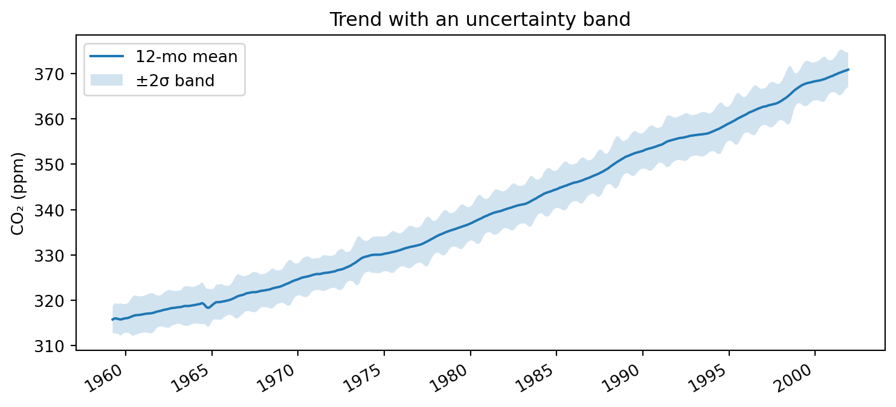
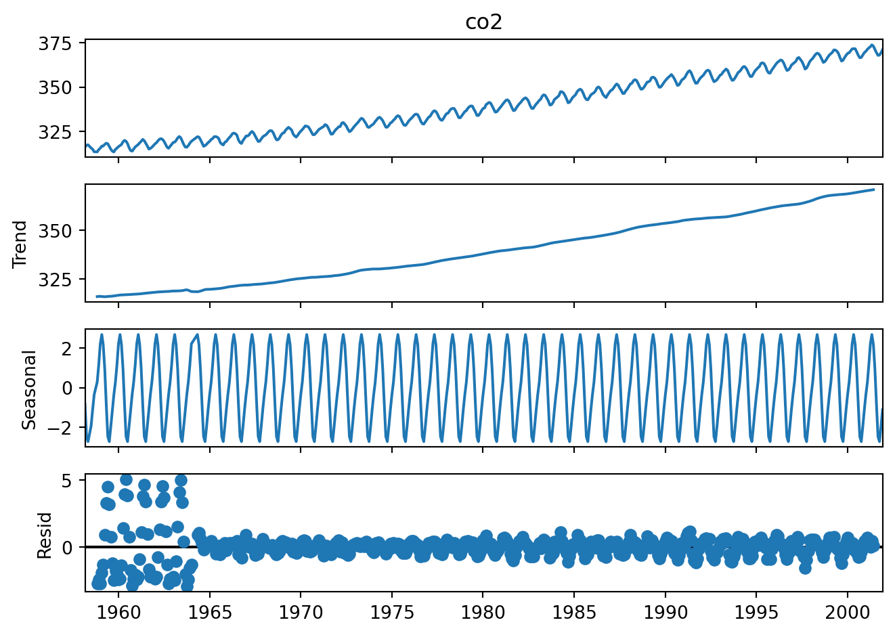

Data with a direction. This chapter covers visualizing change over time — trends, seasonality, and uncertainty — and the honesty challenges unique to the temporal axis.
📖 Background & Motivation
Time-series data carries an extra structural fact that ordinary tabular data does not: order. Observations are linked by their position in time, so patterns like trend, seasonality, and autocorrelation become the story. Visualizing time well means respecting that order — choosing the right temporal resolution, handling gaps, and deciding whether to show raw values, smoothed trends, or rates of change.
Time is also where some of the most common visual dishonesty appears: truncated y-axes that exaggerate change, mismatched aspect ratios, and dual-axis charts that imply spurious relationships. This week pairs the mechanics of temporal visualization with a discipline of honest communication, and introduces uncertainty visualization — error bars, confidence bands, and intervals — since real time series are rarely as precise as a single line implies. Uncertainty returns in Week 13 when we visualize model predictions.
🔎 Learning Objectives
Parse, resample, and align time-indexed data with pandas.
Visualize trend and seasonality, choosing appropriate temporal resolution.
Communicate uncertainty with error bars and bands.
Recognize and avoid common time-axis distortions.
📚 Readings & Resources
Wilke, Fundamentals of Data Visualization, Ch. 13 (time series) and Ch. 16 (uncertainty).
Block 1 — Concepts & Theory (~30 min). What’s special about time (8) · trend vs. seasonality; decomposition (10) · visualizing uncertainty (10) · the truncated-axis problem (2).
Block 2 — Guided Demonstration (~30 min). Parse dates, resample (10) · trend with a rolling mean; decompose seasonality (12) · add a confidence band (8).
☕ Break (~10 min).
Block 3 — Hands-On (~40 min). Load and resample a series (10) · trend + uncertainty band (20) · wrap into a Streamlit app with a resolution selector (10).
Block 4 — Wrap-Up (~10 min). Share charts; how did resolution change the story? (6) · preview homework (4).
💻 Live Code
We use the Mauna Loa atmospheric CO₂ series (ships with statsmodels): a textbook example of a strong upward trend with clear annual seasonality.
import matplotlib.pyplot as pltax = monthly.plot(alpha=0.4, label="monthly", figsize=(9, 4))monthly.rolling(12).mean().plot(ax=ax, label="12-month rolling mean", linewidth=2)ax.set_ylabel("CO₂ (ppm)")ax.set_title("Mauna Loa CO₂: raw monthly vs. smoothed trend")ax.legend()plt.show()

Uncertainty band
roll = monthly.rolling(12)mean, std = roll.mean(), roll.std()ax = mean.plot(figsize=(9, 4), label="12-mo mean")ax.fill_between(mean.index, mean -2* std, mean +2* std, alpha=0.2, label="±2σ band")ax.set_ylabel("CO₂ (ppm)")ax.set_title("Trend with an uncertainty band")ax.legend()plt.show()

Seasonal decomposition
from statsmodels.tsa.seasonal import seasonal_decomposeresult = seasonal_decompose(monthly, period=12)result.plot()plt.tight_layout()plt.show()

The decomposition separates the long-run trend, the repeating annual seasonal cycle, and the residual — three views that a single line would blur together.
Wrap into a Streamlit app (copy-and-run)
# app.py — run with: streamlit run app.pyimport streamlit as stimport statsmodels.api as smco2 = sm.datasets.co2.load_pandas().data.dropna()freq = st.selectbox("Resolution", {"Monthly": "MS", "Quarterly": "QS", "Yearly": "YS"})series = co2["co2"].resample({"Monthly": "MS", "Quarterly": "QS", "Yearly": "YS"}[freq]).mean()st.title("CO₂ Trend Explorer")st.line_chart(series)
🧪 In-Class Activity
Take a noisy series and show it at two resolutions with a trend line and an uncertainty band.
Discuss: How does changing resolution change the apparent trend? Is the y-axis honest? When is a band more honest than a single line?
🏠 Homework
Choose a time series of at least a few years.
Visualize trend and seasonality, and show uncertainty in at least one chart.
Include a short note on a temporal-honesty choice you made (axis, resolution).
Submit as a Streamlit app (with a resolution widget) or .ipynb + .html.
Rubric (10 pts): correct date handling and resampling (3) · trend/seasonality shown clearly (3) · honest, well-communicated uncertainty (4).
🧩 Optional Extensions
Add an interactive date-range brush in Altair.
Overlay a bootstrap confidence interval instead of ±2σ.
Compare additive vs. multiplicative seasonal decomposition.
✅ Submission Checklist
Your assignment fulfills all the basic requirements listed above.
Any Streamlit app runs locally with no errors.
Your axes are honest and your uncertainty choice is explained.